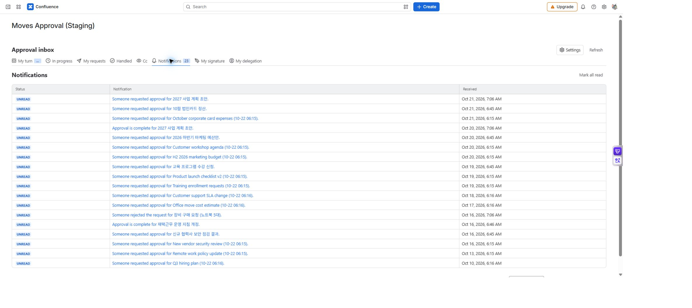

MOVES APPROVAL / 사용자 가이드
참조와 알림
참조자는 결정 없이 요청의 진행을 확인하고, 알림은 요청과 결과를 알려 줍니다. 참조 지정이나 알림 수신만으로 원본 페이지의 보기 권한이 생기지는 않습니다.
참조자로 확인하기
요청자가 참조로 지정하면 승인 업무함 → 참조에서 요청을 찾습니다. 그룹을 참조로 넣은 경우 요청을 저장한 시점의 구성원이 대상이며, 나중에 그룹에 들어온 사용자가 자동으로 추가되지는 않습니다.
참조자에게는 요청 생성·최종 승인·반려·회수·만료의 앱 내 알림이 갑니다. 중간 단계의 승인은 최종 승인과 구분하세요.
알림 채널 구분
| 채널 | 위치·동작 | 확인할 점 |
|---|---|---|
| 앱 내 알림 | 업무함의 알림 | 요청·결과·독촉·마감 임박을 정책에 따라 표시합니다. |
| Confluence 알림 | 대상 페이지의 @멘션 댓글 | 댓글을 작성하는 사용자의 권한이 필요합니다. |
| 이메일 | Confluence가 개인 알림 설정에 따라 발송 | 앱이 이메일을 직접 보내지는 않습니다. |

MA-13 · 앱 내 알림은 요청·결정 결과를 한곳에 모읍니다. Confluence 댓글 알림은 정책과 댓글 권한이 모두 필요합니다.
언제 누구에게 가나요
| 상황 | 앱 내 알림 | @멘션 댓글 |
|---|---|---|
| 요청 생성 | 모든 승인자·참조자 | 첫 단계 승인자 |
| 다음 단계 시작 | 요청 때 받은 알림과 구분 | 새 단계 승인자 |
| 최종 승인 | 요청자·참조자 | 요청자·참조자 |
| 반려 | 요청자·미결정 승인자·참조자 | 요청자 |
| 만료 | 요청자·미결정 승인자·참조자 | 없음 |
| 독촉·마감 임박 | 지금 차례인 승인자, 마감 임박은 요청자 포함 | 없음 |
자신이 수행한 동작에 대한 알림은 본인에게 보내지 않습니다. 회수는 미결정 승인자·참조자에게 앱 내 알림을 보내며, 요청자가 아닌 사람이 회수하면 요청자도 받습니다.
알림을 받지 못했을 때
앱 내 알림 정책 → 알림 종류와 수신 역할 → 현재 차례 → 댓글 작성 권한 → 개인 Confluence 알림 설정 순으로 확인합니다. 댓글 실패만으로 결재가 실패했다고 판단하지 말고 상세의 실제 결정 기록을 확인하세요.
독촉·마감 점검은 하루 한 번 수행됩니다. 마감 이후 결정은 정기 알림이나 상태 정리를 기다리지 않고 차단됩니다. 관리자는 전역 정책에서 채널과 주기를 정합니다.